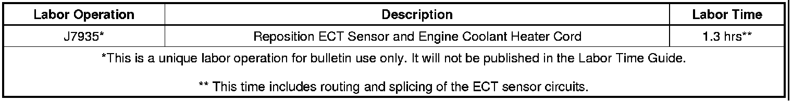

Engine - MIL ON P0116/P1400 Set In Very Cold Temps
TECHNICALBulletin No.: 10-06-04-008B
Date: June 22, 2011
Subject: Malfunction Indicator Lamp (MIL) Illuminated at Very Cold Ambient Temperatures when Using Engine Coolant Heater, DTC P0116 and/or P1400 Set (Relocate Engine Coolant Temperature (ECT) Sensor and Engine Coolant Heater Cord)
Models:
2006-2007 Buick Rainier
2009 Buick LaCrosse Super, Allure Super (Canada Only)
2006-2012 Cadillac Escalade
2006-2007 Chevrolet Monte Carlo
2006-2009 Chevrolet Impala SS, TrailBlazer
2006-2012 Chevrolet Avalanche, Express, Silverado, Tahoe
2006-2009 GMC Envoy
2006-2012 GMC Savana, Sierra, Yukon
2006-2008 Pontiac Grand Prix
2006-2009 Saab 9-7X
Equipped with V8 Engine RPO LC9, LH6, LH8, LH9, L76, LS2, LS4, LFA, LZ1, L92, L94, L9H or L20, L96, LMF, LMG, LY2, LY5, LY6
Please Refer to GMVIS
Attention:
To properly correct this condition, you must follow both of the procedures to relocate the ECT sensor and the engine coolant heater cord.
Supercede:
This bulletin is being revised to update the model years to 2012. Please discard Corporate Bulletin Number 10-06-04-008A (Section 06 - Engine/Propulsion System).
Condition
Some customers may comment that the malfunction indicator lamp (MIL) illuminates after starting the vehicle when they were using the engine coolant heater in very cold ambient temperatures. This usually occurs in a range of -23 to -40°C (-10 to -40°F) or colder.
The technician may observe on a scan tool DTC P0116 and/or P1400 set as Current or in History.
Cause
This condition may be caused by the engine control module (ECM) determining that the ignition OFF time requirement has been met at start-up and interpreting the temperature difference between the engine coolant temperature (ECT) sensor and the intake air temperature (IAT) sensor as being outside of a calibrated range.
Correction
Important
DO NOT replace the ECM for this condition.
Relocating the ECT Sensor
1. Turn ON the ignition with the engine OFF.
2. Perform the diagnostic system check - vehicle. Refer to Diagnostic System Check - Vehicle in SI.
• If DTC P0116 and/or P1400 are set and the customer WAS using the engine coolant heater, proceed to Step 3.
• If DTC P0116 and/or P1400 are set and the customer WAS NOT using the engine coolant heater, refer to Diagnostic Trouble Code (DTC) List - Vehicle in SI.
3. Turn OFF the ignition.
Warning
To avoid being burned, do not remove the radiator cap or surge tank cap while the engine is hot. The cooling system will release scalding fluid and steam under pressure if the radiator cap or the surge tank cap is removed while the engine and radiator are still hot.
4. Remove the surge tank fill cap from the surge tank or the coolant pressure cap from the radiator.
5. Raise and support the vehicle. Refer to Lifting and Jacking the Vehicle in SI.
6. Place a clean drain pan under the radiator drain cock or under the lower radiator hose depending on the vehicle. Refer to Cooling System Draining and Filling in SI.
7. Loosen the radiator drain cock if equipped or use J 38185 clamp pliers and reposition the clamp on the lower radiator hose at the radiator.
8. Remove the end of the lower radiator hose from the radiator.
9. Drain the engine coolant sufficiently below the level of the ECT sensor.
10. Close the radiator drain cock or connect the lower radiator hose at the radiator.
11. Use the J 38185 clamp pliers to place the clamp into the original position on the hose.
12. Lower the vehicle.
13. Disconnect the wiring harness connector from the ECT sensor (2).
14. Remove the ECT sensor (1) from the front of the cylinder head.
15. Remove the corresponding size plug at the rear of the OTHER cylinder head.
16. Coat the threads of the ECT sensor with sealer. Use GM P/N 12346004 (Canadian P/N 10953480) or an equivalent.
17. Install the ECT sensor in the hole of the cylinder head where the plug was removed.
Tighten
Tighten to 20 Nm (15 lb ft).
18. Coat the threads of the plug with sealer. Use GM P/N 12346004 (Canadian P/N 10953480) or an equivalent.
19. Install the plug in the hole of the cylinder head where the ECT sensor was removed
Tighten
Tighten to 20 Nm (15 lb ft).
Important
Leave enough wire attached to the ECT sensor harness connector in order to create manageable splices that are at least 40 mm (1.5 in) away from the other splice.
20. Extract a portion of the ECT sensor harness wiring and connector from the protective conduit. Cut off the ECT sensor harness connector and wiring.
21. Determine a routing path for the ECT sensor jumper harness wires so that they can be secured TO or WITHIN an existing protective conduit.
Note
This step is to set up and verify the length of wiring that is required before cutting.
22. Route the ECT sensor jumper wires and then enclose them in their own protective conduit in order to VERIFY the length that is required.
23. Cut the ECT sensor jumper wires to the appropriate length.
Note
Adjust splice locations so that each splice is at least 40 mm (1.5 in) away from the other splice or connector.
24. Splice the ECT sensor jumper wires to the ORIGINAL ECT HARNESS LOCATION using DuraSeal weatherproof splices. Refer to Splicing Copper Wire Using Splice Sleeves in SI.
Note
Adjust splice locations so that each splice is at least 40 mm (1.5 in) away from the other splice or connector.
25. Splice the ECT sensor jumper wires to the ECT SENSOR HARNESS CONNECTOR using DuraSeal weatherproof splices. Refer to Splicing Copper Wire Using Splice Sleeves in SI.
26. Connect the ECT sensor harness connector to the ECT sensor.
27. Secure the ECT sensor jumper wires that are in their own protective conduit TO or WITHIN the existing harness conduit using tie straps.
Important
You MUST run the engine at the specified RPM and until it reaches normal operating temperature and then allow it to idle as indicated in SI. The engine MUST then be allowed to cool down in order to top off the coolant level as needed.
28. Fill the cooling system to the proper level. Refer to Cooling System Draining and Filling in SI.
29. Pressure test the cooling system. Refer to Cooling System Leak Testing in SI.
30. Use a scan tool to clear any DTCs.
Relocating the Engine Coolant Heater Cord
Important
For reference, the procedure and graphics that are shown are from a Chevrolet Silverado, but are similar for the other vehicles listed above.
1. Turn OFF the ignition.
2. Ask the customer where they would prefer the extension cord to exit from the engine compartment in order to determine the required extension cord length.
3. Obtain an extension cord with the following features:
- 120 volt
- 14/3 gauge
- 15A capacity
- Three prong
- Polarized plug and receptacle
- Chemical resistant
- Grounded terminals
- Designed for use in a cold outdoor environment
- Outer jacket resistant to deterioration from moisture, abrasion and exposure to sunlight
- Maximum length of 2.5-3 m (8-10 ft)
4. Release enough of the clips that retain the engine coolant heater cord to the vehicle to provide the necessary length for repositioning.
5. Apply dielectric grease to the electrical contacts of the heater cord receptacle and the extension cord plug to prevent corrosion. Use GM P/N 12345579 (in Canada, use P/N 10953481) or an equivalent.
6. Connect the heater cord receptacle to the extension cord plug and wipe OFF any excess grease.
7. Wrap electrical tape around the connection as shown.
8. Route the engine coolant heater cord and extension cord behind the alternator and adjacent to the engine coolant crossover pipe as shown.
9. Continue to route the extension cord to the exit location desired by the customer as shown.
10. Review the routing of the coolant heater cord and extension cord to verify that it does not touch any sharp edges that could damage it.
11. Secure the engine coolant heater cord and the extension cord with tie straps as needed.
12. Resecure any of the original clips that retained the engine coolant heater cord to the vehicle that were released to provide length.
Part Information
The extension cord may be obtained at any of the following outlets:
- Lowes*
- Home Depot*
- Canada: Acklands-Grainger* (www.acklandsgrainger.com), Catalogue Part Number: CWRSJTOW3C14-10
USA: Cords should bear the UL symbol.
Canada: Cords should bear the ULc symbol or CSA approval.
*We believe these sources and their products to be reliable. There may be additional manufacturers of such products/materials. General Motors does not endorse, indicate any preference for, or assume any responsibility for the products or material from these firms or for any such items that may be available from other sources.
Warranty Information (excluding Saab Models)
For vehicles repaired under the 5 year / 100,000 mile (160,000 km) powertrain warranty, use:

Warranty Information (Saab Models)
For vehicles repaired under warranty, use the table.

Disclaimer